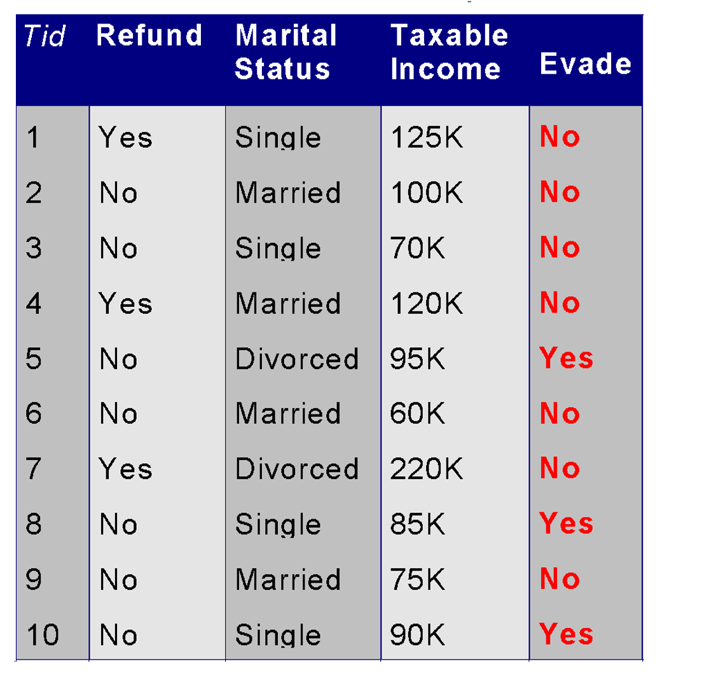
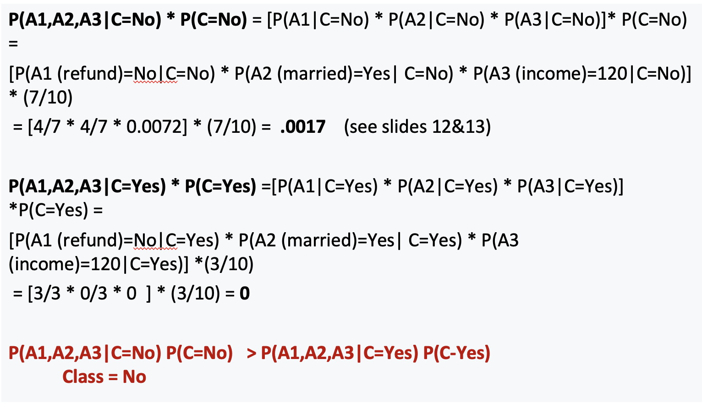
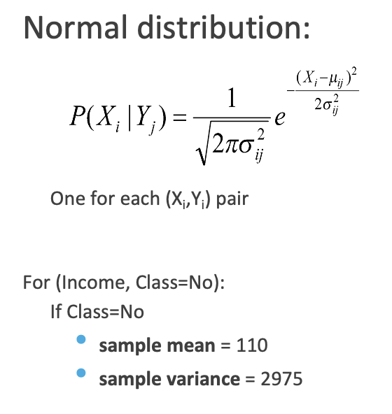

NAIVE BAYES
OVERVIEW:
Naive Bayes is a supervised classification algorithm based on Bayes' theorem. The reason that Naive Bayes algorithm is called Naive is because the algorithm makes a very strong assumption about the data having features independent of each other while in reality, they may be dependent in some way.
In other words, it assumes that the presence of one feature in a class is completely unrelated to the presence of all other features. If this assumption of independence holds, Naive Bayes performs extremely well and often better than other models.

Naive Bayes can also be used with continuous features but is more suited to categorical variables. If all the input features are categorical, Naive Bayes is recommended. However, in case of numeric features, it makes another strong assumption which is that the numerical variable is normally distributed.

MULTINOMIAL NAIVE BAYES:
From Python sklearn: MultinomialNB implements the naive Bayes algorithm for multinomially distributed data, and is one of the two classic naive Bayes variants used in text classification (where the data are typically represented as word vector counts, although tf-idf vectors are also known to work well in practice).
The multinomial distribution is the type of probability distribution used to calculate the outcomes of experiments involving two or more variables. The more widely known binomial distribution is a special type of multinomial distribution in which there are only two possible outcomes.
EXAMPLE:
Given a Test Record X, classify as Evade Class (C) =Yes or No
Let record X = {Refund R=No, Married M=Yes, Income I =120K}.
So, attribute A1 is Refund, attribute A2 is Married, and Attribute A3 is Income.
If an attribute (such as Taxable Income) is numeric, you can either discretize or you can use a likelihood to estimate the probability.

SMOOTHING:
Smoothing is required for NB models to handle unseen features in the test data. Without smoothing, if a feature appears in the test data but not in the training data, the probability calculation will result in zero probability for that feature, causing the entire likelihood to be zero. Smoothing techniques like Laplace smoothing or Lidstone smoothing add a small constant to all feature counts, ensuring that no feature has zero probability and preventing the model from being overly confident in its predictions.

Bernoulli Naive Bayes:
Bernoulli Naive Bayes is a variant of Naive Bayes that is appropriate for binary feature vectors, where features represent whether a particular term occurs or not in a document. It models the presence or absence of each feature in a document, rather than its frequency. This makes it suitable for tasks like document classification where only the presence of words matters, such as spam detection or sentiment analysis in short text messages like tweets.
Gaussian Naive Bayes:
Gaussian Naive Bayes is a type of Naive Bayes classifier which works on continuous normally distributed features.
PLAN:
- Load the cleaned Denver weather dataset, preprocess it to label weather descriptions, convert features into Category/Factor type, and filter data for Denver only.
- Split the dataset into training and testing sets using stratified sampling in python and random sampling without replacement in R to ensure proportional representation of each class in both sets.
- Train Naive Bayes classifier, evaluate accuracy, and generate confusion matrices.
- Visualize their confusion matrices.
DATA PREPARATION:
naiveBayes() in R from the e1071 package can handle both quantitative data including numeric features with negative values and qualitative data. In python (sklearn), but Multinomial Naive Bayes does not support negative values. So Gaussian Naive Bayes in Python is ideal for the weather data as temperature contains negative values.
- Before Transformation:
- After Filtering Denver Data:
- After Transformation (Python):
- After Transformation (R):
- Splitting data into Train and Test set (Python):
- Checking the balance of the Train and Test set (Python):
- Splitting data into Train and Test set (R):
- Checking the balance of the Train and Test set (R):
- Classification Dataset:
The below image shows the sample of data before transformation.
The below image shows the data after filtering city by Denver.
The below image shows the data after after After labelling (clear/not clear) the data for classification and changing its type to Category.
The below image shows the labelling (clear/not clear) the data for classification and changing its type to Factor.
The below image shows train and test data created using stratified sampling to ensure that each class is represented proportionally in both sets. Train and test sets are disjoint to ensure that the model is evaluated on data it hasn't seen during training, enabling an unbiased assessment of its performance.
The below image shows the distribution of labels in the Train and Test set. They are well balanced.
The below image shows train and test data created using Random sample without replacement. Train and test sets are disjoint to ensure that the model is evaluated on data it hasn't seen during training, enabling an unbiased assessment of its performance.
The below image shows the distribution of labels in the Train and Test set. They are well balanced.
CODE:
- Gaussian Naive Bayes (Python):
- Naive Bayes (R):
RESULTS:
- Accuracy (Python):
- Confusion Matrix (Python):
- Prediction probabilities (Python):
- Accuracy and Confusion Matrix (R):
Gaussian Naive Bayes model achieved an accuracy of 66.85%.
The above image displays confusion matrix of the Gaussian Naive Bayes classifier.
The above image displays prediction probabilities. Columns are the labels in alphabetical order and the decimal in the matrix are the probability of being that label.
The above images displays the accuracy and confusion matrix. Naive Bayes model in R achieved an accuracy of 66.98%.
CONCLUSION:
Exploring Naive Bayes classifiers provided enlightening insights into effectively classifying weather patterns. Our analysis revealed that the Gaussian Naive Bayes model achieved an impressive accuracy of 66.85%, showcasing its efficacy in weather classification tasks. By examining the probability distributions underlying classification decisions, we discerned influential factors determining clear or unclear weather conditions. Visualizing the probabilistic models elucidated the intricate relationships between weather variables and classification outcomes. Comparing different Naive Bayes models highlighted the importance of algorithm choice and parameter selection in achieving optimal predictive accuracy. These findings deepen our understanding of weather analysis and offer valuable insights for diverse applications, such as agriculture and disaster management. In summary, Naive Bayes analysis equips us with a powerful tool for interpreting complex weather data and extracting actionable insights to inform decision-making processes.